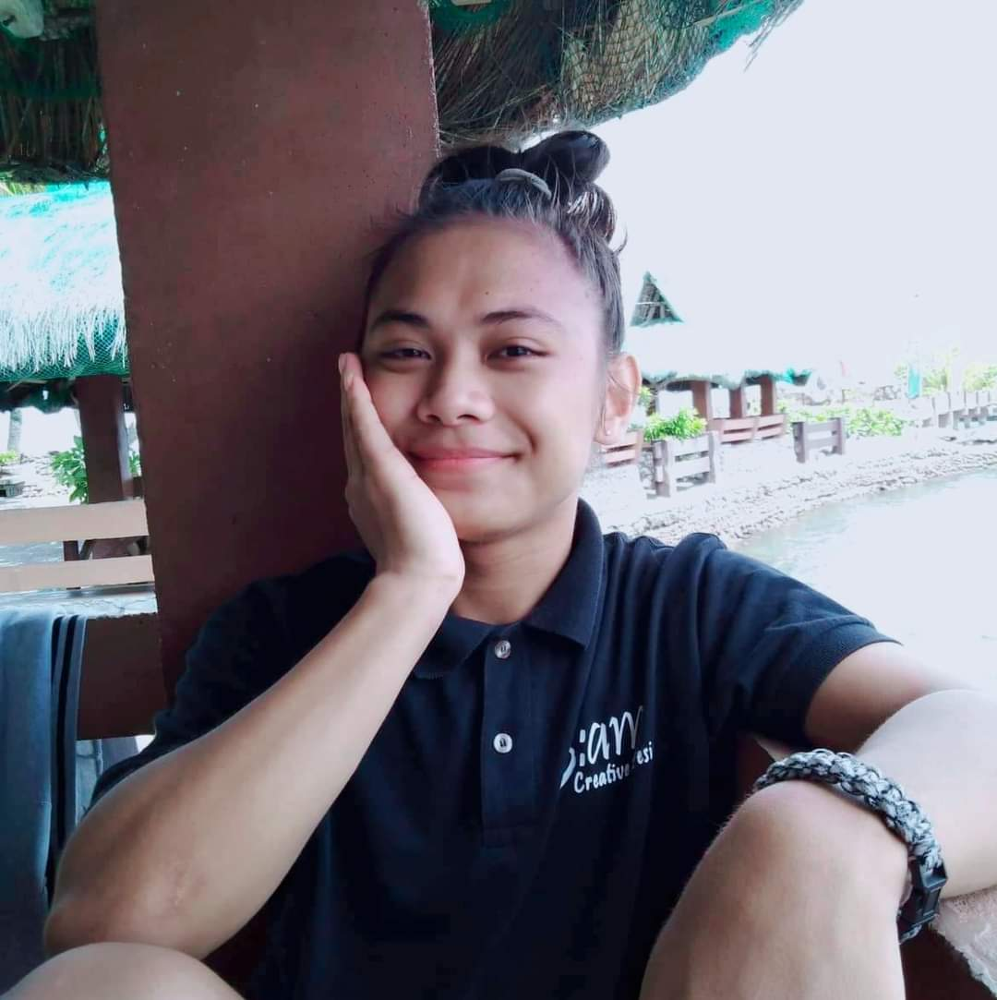

"
Personal DetailsName: |
Grangos, Tyran HughAs a diligent and self-driven student, I thrive in both collaborative team environments and when working autonomously. My ability to manage tasks independently, coupled with strong organizational skills, allows me to meet deadlines effectively. I take initiative, maintain a strong work ethic, and consistently deliver results. Whether in the classroom or during internships, I approach challenges with resourcefulness and adaptability. Education
Immacualte Heart of Mary Accademy(2015-2017) Work Experience
|